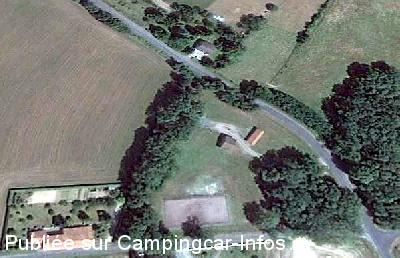

ASN = Aire de services avec stationnement nuit possible de :
LES SALLES LAVAUGUYON
(N° 391)
Accès/adresse :
Route de Saint Mathieu
Le Tilleul
87440 LES SALLES LAVAUGUYON
Le Tilleul
87440 LES SALLES LAVAUGUYON
Latitude : (Nord) 45.73987° Décimaux ou 45° 44′ 23′′
Longitude : (Est) 0.70134° Décimaux ou 0° 42′ 4′′
Tarif : 2010
Stationnement, services : 4 €
Type de borne : RACLET
Services :


Tous commerces
Autres informations :
Ouvert d'avril à novembre
8 emplacements
Tel mairie : +33(0)255 003 068
Aire municipale permanente
sauf période de gel

Le 09/02/2014 par mitra
de
JP Poignard
le 09/02/2014 :
Juillet 2013
Aire en espalier, spacieuse et très calme. Pour environ 10 CC
Juillet 2013
Aire en espalier, spacieuse et très calme. Pour environ 10 CC